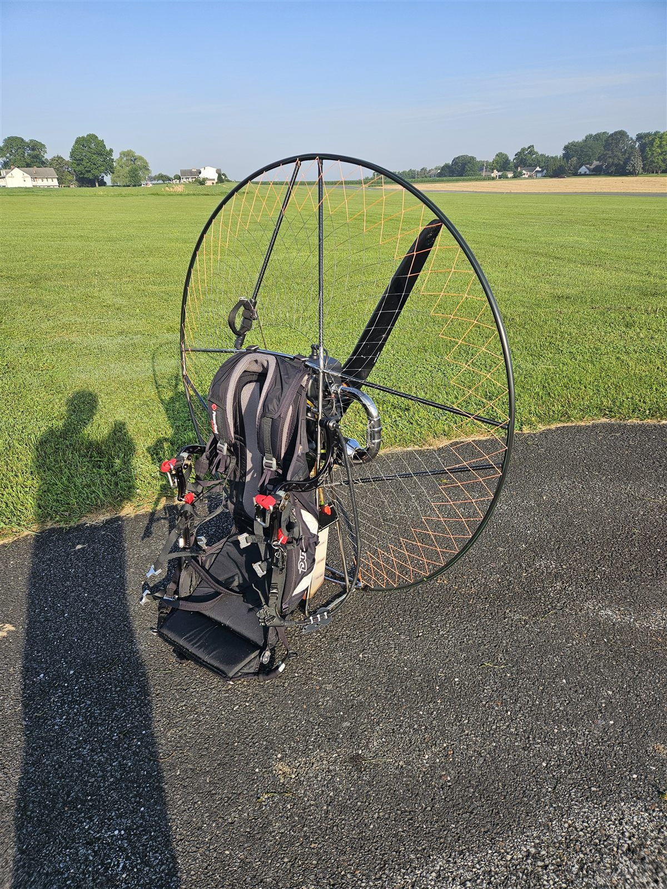
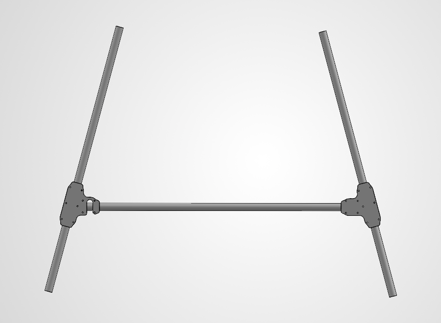

Carbon Fiber Support Rod
A carbon fiber rod supports the pull start, and gives me extra mounting points for my GPS and instruments.
// fabrication · powered paragliding
The original pull start mount on my SkyFox paramotor failed, so I'm redesigning it around a carbon fiber support rod that also gives my GPS and instruments somewhere to mount.

The pull start mount that came on my SkyFox paramotor failed. A pull start takes a hard, sudden load every time the engine is started, so the replacement has to be noticeably stronger than the original.
Rather than just making a stronger copy of the original, I'm adding a carbon fiber support rod to the design. The rod carries the pull start load and doubles as a rail for mounting my GPS and other instruments.
How the new mount fits together.
A carbon fiber rod supports the pull start, and gives me extra mounting points for my GPS and instruments.
The mount is designed in SolidWorks and 3D printed in two halves that clamp together.
One half gets threaded PEM inserts heat-staked into it. Screws go in from the other half and thread into the inserts, so the screws bite into metal threads instead of plastic.
Two small machined aluminum blocks are glued into the carbon fiber rod to stop it from turning under the pull start load.

Updates as the project moves along.
Posted the assembly render and STEP models of the left and right mounts (v3).
Redesign underway in SolidWorks: carbon fiber support rod, two-piece printed mount, and aluminum anti-rotation blocks.